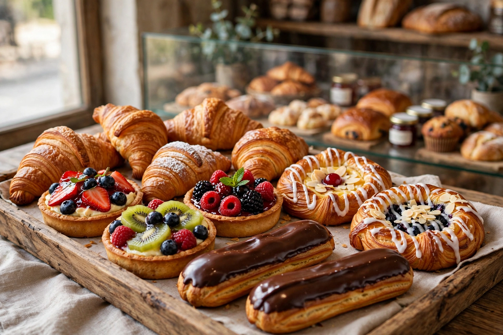

From Wikipedia, the free encyclopedia

Pastry is baked food made with a dough of flour, water, and shortening (solid fats, including butter) that may be savoury or sweetened. Sweetened pastries are often described as bakers' confectionery. Common pastry dishes include pies, tarts, quiches, croissants, and pasties. Pastry can also refer to the dough itself, from which such products are made, characterised by a higher fat content than bread dough and a flaky or crumbly texture.
The principal types are: shortcrust, the simplest and most common, used for pie bases and tarts; flaky and puff pastry, laminated doughs in which layers of butter are folded into the dough so that steam separates paper-thin layers during baking (puff pastry may have hundreds of layers); choux pastry, a light twice-cooked dough piped for éclairs and profiteroles, which puffs into hollow shells; phyllo (filo), unleavened sheets stretched tissue-thin and layered with fat, used in baklava and strudels; and hot water crust, a sturdy, mouldable pastry used for raised pork pies. Pâte sucrée and sablé are sweetened short doughs for desserts.
Fats-and-flour pastes were made in ancient Egypt, Greece and Rome, and medieval European cooks developed elaborate raised pies — partly food, partly table spectacle — whose tough, inedible "coffyns" served as cooking containers. The refined laminated pastries of France were codified by chefs such as Marie-Antoine Carême in the early 19th century, founding modern pâtisserie. The chemistry of pastry is the management of gluten and fat: cold fat, minimal mixing and rest periods keep the crumb tender and layered, while steam generated in a hot oven provides the lift in laminated and choux doughs.
See also: Croissant · Pie · Puff pastry · Choux pastry